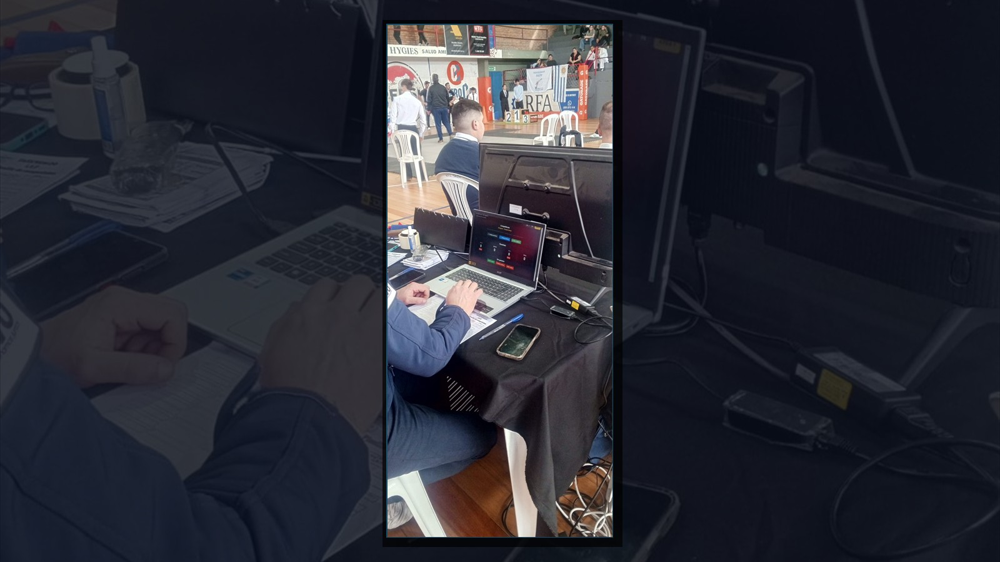
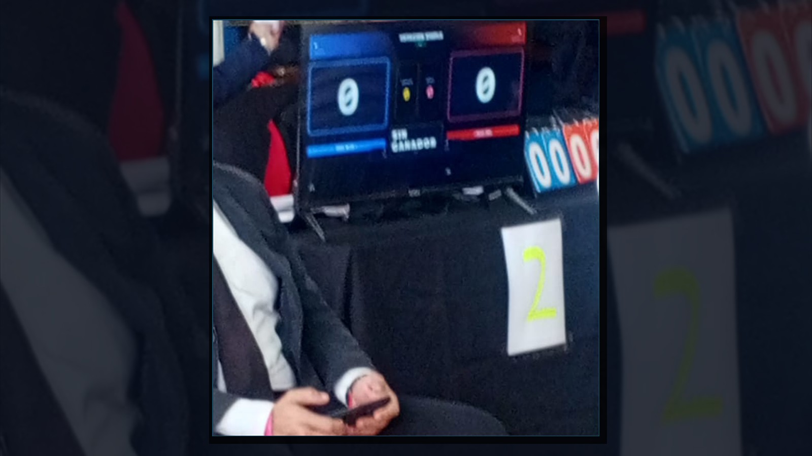
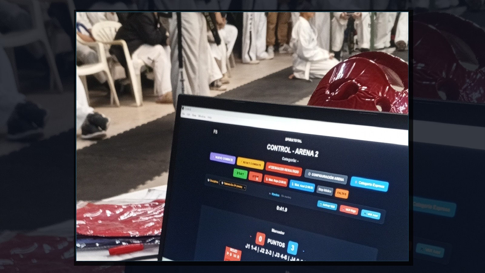
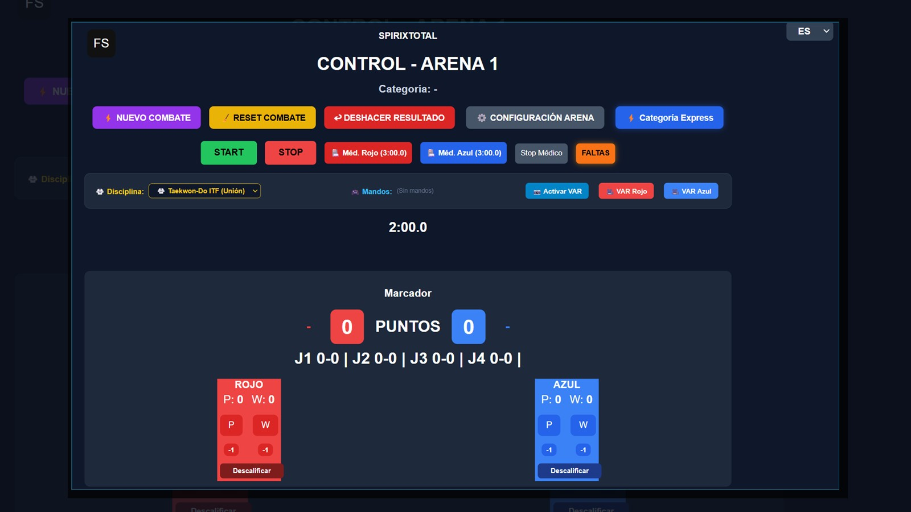
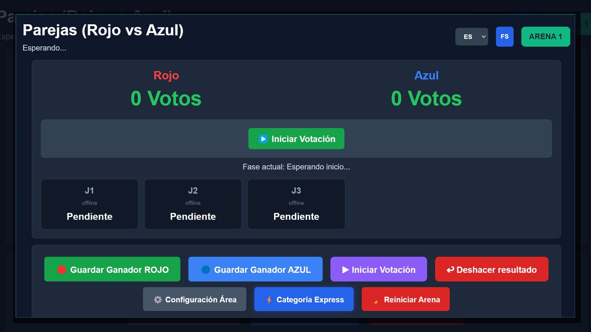
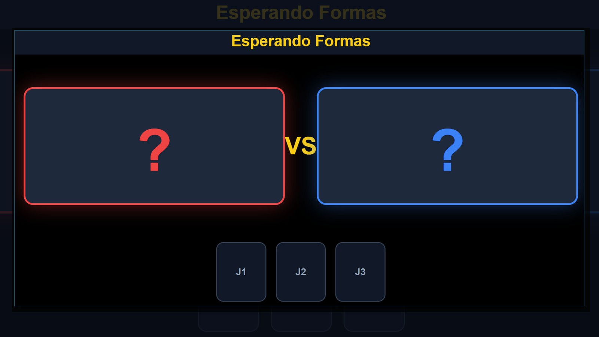

La Plataforma Definitiva de Puntuación Electrónica y Gestión de Torneos.
Diseñado para superar los desafíos de un estadio real: Cero cables HDMI, pantallas gigantes en SmartTVs sin cables, jueces puntuando desde sus teléfonos celulares por código QR y arquitectura Offline-First con SQLite que jamás se detiene ante cortes de energía o caídas de Internet.
El Sistema Operando en el Tatami
Sin maquetas ficticias ni renders: así funciona SpirixTotal 2.0 en los estadios y torneos oficiales.




Comprueba la inmediatez del sistema ahora mismo
Presiona los pulsadores del juez en el smartphone (izquierda) y observa cómo sube el puntaje de inmediato en la pantalla gigante de SmartTV del estadio (derecha).
¿Qué pasa si algo sale mal durante el torneo?
Un evento con cientos de atletas no puede detenerse. SpirixTotal está blindado contra los fallos más temidos por los organizadores:
Corte Total de Energía Eléctrica
El motor integrado SQLite WebAssembl•/strong> ejecuta transacciones atómicas continuas. Si se corta la luz del estadio, al reencender la PC el torneo continúa exactamente en el segundo y punto exacto donde se apagó.
Persistencia ACIDCaída o Saturación del WiFi
SpirixTotal no depende de Internet para operar. Corre en Lan cerrada con WebSockets y tecnología de deltas (fast-json-patch), transmitiendo micro-paquetes para no saturar jamás el router del recinto.
Celular de un Juez Agotado
Si un árbitro se queda sin batería en su teléfono, la mesa central genera un código QR de reemplazo en caliente en 5 segundos. Cualquier otro smartphone toma la votación de inmediato sin frenar el combate.
Cambio en CalienteImpugnaciones y Reclamos
Cada voto emitido se firma criptográficamente con HMAC SHA-256 con marca de tiempo precisa al milisegundo. La mesa técnica cuenta con auditoría forense para verificar qué juez votó qué punto con certeza irrefutable.
Auditoría HMACErrores al Tocar la Pantalla
Soporte nativo para Gamepads (Joysticks USB y Bluetooth). Los jueces puntúan por tacto físico con botones de consola mirando directamente a los peleadores sin desviar la mirada al móvil.
Gamepad Plug & Pla•/span>Rotura de Cables HDMI Largos
Elimina los costosos cables de 30 metros que siempre fallan o sufren tropiezos. El módulo Client-Displa•/strong> permite que cualquier SmartTV o proyector con WiFi abra la URL del tatami y muestre el marcador gigante sin cables de video.
Cero Cables HDMIUsted lo propone, Spirix lo Crea.
SpirixTotal no impone un reglamento cerrado. Cuenta con 9 perfiles predefinidos de federaciones internacionales y un motor 100% configurable para cualquier estilo marcial del mundo.
Taekwon-Do ITF (Unión)
Reglamentación internacional con evaluación por criterios de Exactitud Técnica (40%), Ritmo (30%) y Potencia (30%). En combate: rounds de 2 minutos con tiempo médico centralizado y desempate automático.
- 1 Punto: Puño al cuerpo o cabeza / Patada al cuerpo
- 2 Puntos: Patada a la cabeza / Puño saltando
- 3 Puntos: Patada saltando a la cabeza / Giro aéreo
- Formas / Tules por criterios o banderas 1vs1 oficial
Duración Asaltos
2 Rounds de 2:00 min
Capacidad Simultánea
Hasta 12 Áreas
Panel de Jueces
4 o 5 Jueces + Mesa
Modalidad Voto
Criterios / Banderas
SpirixTotal Multi-Sport: Toda la información comercial para organizadores
📄 Abrir Dossier Técnico InteractivoEl sistema operando en campeonatos oficiales
Fotografías directas de estadios y tatamis en torneos oficiales. Sin maquetas ni renders ficticios: tecnología real en acción.
Consola de Control Central: Arena 1
Marcador oficial, cronómetro a décimas, tarjetas de jueces J1-J4, descalificaciones y control instantáneo de VAR.
Mesa de Tatami: Control Arena 2
Terminal al borde del área de combate operando sin cables ni retraso.

Votación de Parejas en Vivo
Módulo para combates o formas por parejas con votación simultánea de jueces.
SmartTV y Juez Móvil QR
Pantalla visible a tribunas y puntuación por celular sin instalar aplicaciones.

Módulo Oficial de Formas
Evaluación de Poomsae y Tul con soporte para paneles de múltiples jueces.
Todo lo que necesita la mesa técnica
Módulos nativos diseñados para reducir al mínimo el tiempo entre combates y profesionalizar el evento.
Motor Matemático de Llaves
Algoritmo certificado para Eliminación Simple, Doble con Repechaje, Round Robin y Pools. Probado con hasta 152 competidores por categoría con cálculo y balanceo automático de Byes.
Transmisión OBS & Overlays TV
Generador nativo de gráficos en vivo con fondo Chroma Ke•/strong> (pantalla verde). Conecta la mesa a OBS Studio y transmite combates en youTube o Twitch con marcadores televisivos en vivo.
Asistente de Voz (Llamador TTS)
Conecta un parlante a la PC. El sistema anunciará automáticamente por voz sintética el nombre de los atletas y su área cada vez que avance una llave: "Área 2: Próximo combate Pérez vs Gómez".
Live Tracker para el Público (PWA)
Los padres y espectadores en las tribunas escanean un QR con su celular y siguen en tiempo real qué combates están transcurriendo y a qué hora compiten sus hijos, aliviando las consultas a la mesa.
Importación Excel y Exportación PDF
Carga planillas completas de competidores desde archivos Excel (.xlsx/.csv) sin tipeo manual. Al finalizar, exporta diplomas y llaves completas en formato PDF para firmas oficiales.
Puente Híbrido con SpirixCloud
Recibe las inscripciones previas de los dojos vía web desde la nube. Al llegar al estadio, SpirixTotal local descarga toda la nómina con 1 solo clic y genera las llaves automáticamente sin conexión.
Organiza tu próximo torneo al nivel de los mejores
Tanto para un torneo escolar de 2 áreas como para un campeonato panamericano o mundial de 12 tatamis, SpirixTotal te brinda la infraestructura para que no haya margen de error.
☁️ ¿Cómo funciona el Portal de Inscripciones SpirixCloud?
- 1. Venta y Activación: Al adquirir tu licencia, tu torneo se activa en la nube y se te genera un Código Único de Torneo (ej:
COPA-2026). - 2. Enlace Exclusivo para Escuelas: Envías a los profesores el enlace directo con tu código para que inscriban atletas y suban comprobantes de pago.
- 3. Sincronización en el estadio: El día del torneo abres SpirixTotal en la PC de la mesa y descargas toda la nómina con 1 clic sin necesidad de internet continuo.
- ✓Licencias adaptadas por cantidad de áreas y días de torneo.
- ✓Capacitación de operadores y soporte técnico el día del evento.
- ✓Compatibilidad con cualquier computadora con Windows 10/11.